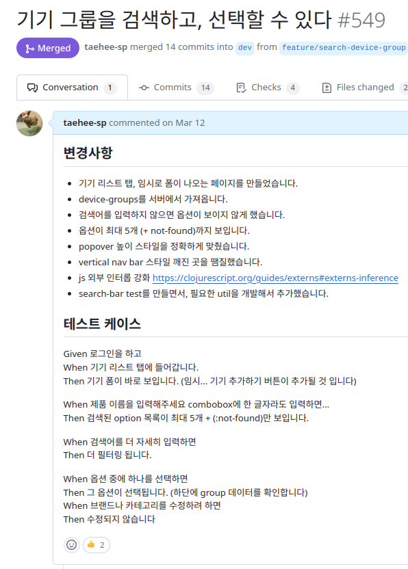
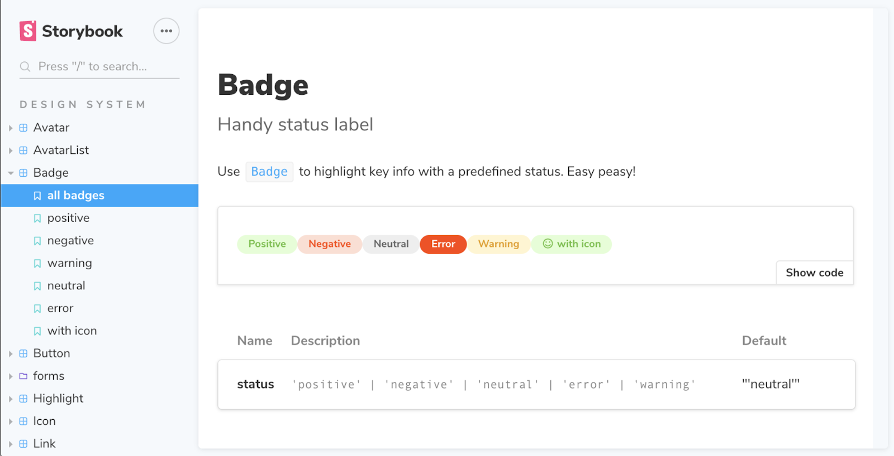
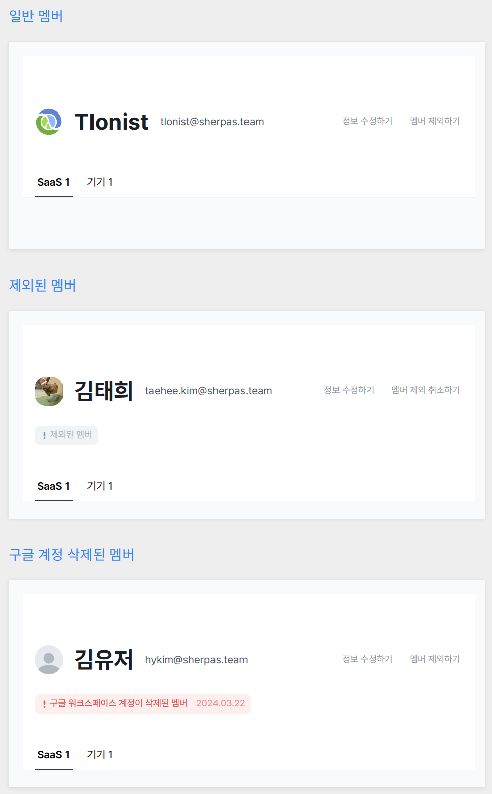
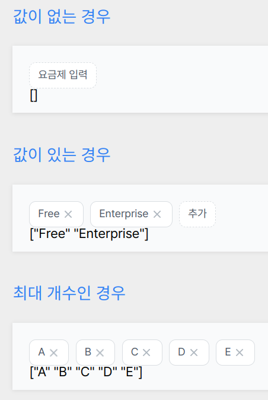
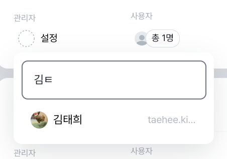
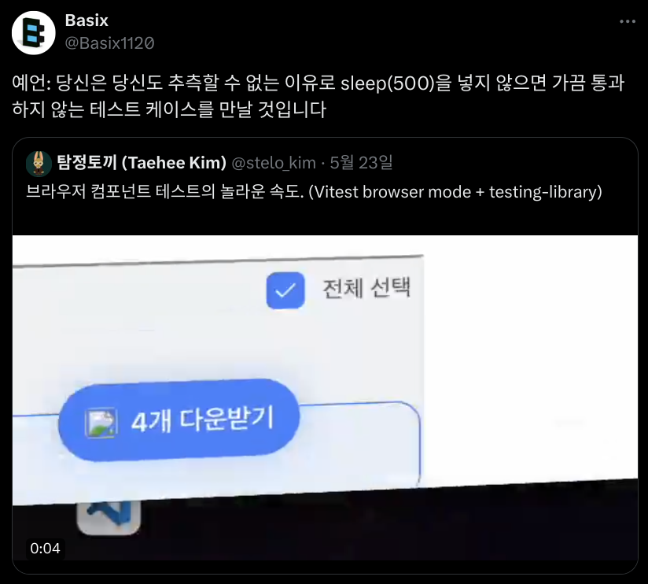

# <span class='text-excel'>스토리북 / 테스트</span>와 함께 하는<br/> <span class='text-excel'>컴포넌트 주도</span> 프론트엔드 개발 <br/> <br/> <br/> <br/> 김태희(aka 탐정토끼) - <span class='text-clojure'>클로저</span> 풀스택 개발자 [sherpas](https://www.sherpas.team/cb8961b8-6d70-4904-b45d-19f543032b62) --- ## 순서 - 프론트엔드의 문제와 고민들 - 프론트 TDD의 현실과 한계 - 컴포넌트 주도 개발 - 스토리북 미신 부수기 - 프론트 테스트 베스트 프랙티스 --- <div class='hero-center'> ## <span class='text-clojure'>프론트엔드의 문제와 고민들</span> </div> --- ### 이런 경험 다들 해보시지 않았나요? - <span class='text-imperative!'>디자인</span>이 나오길 기다리고, <span class='text-imperative!'>백엔드 API</span>가 나오길 기다린다 - 왜 타입스크립트를 써도 <span class='text-imperative!'>QA마다 에러가 40개씩</span> 나올까? - QA를 하면서 <span class='text-imperative!'>기획을 오해</span> 하고 <span class='text-imperative!'>누락</span>한 걸 알게 됨 - 배포 후에도 <span class='text-imperative!'>에러 핫픽스</span> 하느라 기능 개발은 언제해? - "테스트하고 올리신 거 맞아요?" <span class='text-imperative!'>동료를 못 믿게 된다<span class='text-imperative!'> - <span class='text-imperative!'>경우의 수</span>가 많아질 수록 <span class='text-imperative!'>재현</span>도 어렵고, 파악도 어렵다 - <span class='text-imperative!'>공통 로직</span>이나 <span class='text-imperative!'>디자인 시스템</span>을 건드리면 옛 기능도 깨진다 --- - 디자인이 없어도 <span class='text-clojure'>로직 먼저 검증</span> - 데이터 타입을 넘어 <span class='text-clojure'>런타임 동작</span>을 - <span class='text-clojure'>사용자 입장</span>에서 시나리오를 정의 - <span class='text-clojure'>에러를 조기에 발견</span>하고 선순환을 만들기 - <span class='text-clojure'>동료를 신뢰</span>하게 됨 - 복잡한 경우의 수도 <span class='text-clojure'>쉽게 재현</span> - 공통 로직도 <span class='text-clojure'>자신 있게 리팩토링</span> <br/> <br/> -> "테스트가 있으니 안심하고 approve 합니다!" --- <div class='just-center'>  </div> --- <div class='hero-center'> ## <span class='text-clojure'>프론트 TDD의 현실과 한계</span> </div> --- ### 프론트 TDD가 어렵다는 분들이 하는 말 - "<span class='text-imperative!'>기능 개발하기도 바빠서</span>, 테스트는 나중에..." - "테스트 짜는게 <span class='text-imperative!'>어렵고 복잡해요</span>" - "<span class='text-imperative!'>모킹은 어디까지</span> 해야 하나요? 너무 어려워요" - "테스트를 짜도 자꾸 <span class='text-imperative!'>깨지고, 신뢰하기 힘들어</span>요" - "테스트를 돌리는데 <span class='text-imperative!'>너무 오래 걸리고 느려</span>요" <br/> <br/> <br/> -> 시간만 버렸다고 후회하고, 동료를 설득하지도 못함... --- ### 문제를 뒤집자 - 개발을 빠르게 해주고 <span class='text-clojure'>생산성을 올려주는</span> 테스트 - <span class='text-clojure'>사용자 입장에서 직관적</span>으로 작성하는 테스트 - 최소한으로 모킹하고 <span class='text-clojure'>실제 환경과 유사</span>한 테스트 - <span class='text-clojure'>웹 표준과 접근성에 기반</span>해서 신뢰할 수 있는 테스트 - 많은 경우의 수를 <span class='text-clojure'>빠르게 검증</span>할 수 있는 테스트 --- <div class='just-center'> <div>장기적이 아니라 <span class='text-clojure'>지금 당장 도움</span>되는 테스트</div> <br/>...를 어떻게? </div> --- <div class='hero-center'> ## <span class='text-clojure'>컴포넌트 주도 개발</span> </div> --- <div class='just-center'> 리액트와 같은 모던 SPA 프레임워크는 모두 <span class='text-clojure'>합성 가능한 컴포넌트</span>를 강조하는데... > Components are one of the core concepts of React. (...) React lets you create components, reusable UI elements for your app. > > https://react.devlearn/your-first-component 리액트 공식문서 </div> --- ### 왜 우리는 아직도 <span class='text-imperative!'>페이지 중심</span>으로 개발하는가? 앞에서 말한 문제들의 근본 원인 - 무심코 서로 다른 컴포넌트의 <span class='text-imperative!'>경계를 침범하고, 강결합</span>을 만듬 - 의존성은 누적되기 때문에 API, 라우팅, 시간 <span class='text-imperative!'>수 많은 상태와 의존성 지옥</span> - 까다롭고 <span class='text-imperative!'>침투적인 모킹</span> 방식이 필요해짐 - 전역 상태? 모델링? 의존 관계가 암시적이 되고... 상태가 꼬임 <br/> <br/> -> 사실 이게 E2E 테스트의 문제이기도 함 --- ### E2E, Integration, Unit **E2E** : 프로뎍션과 최대한 동일한 환경에서 실제 API와 백엔드로 끝과 끝의 전과정을 테스트 -> playwright, cypress 등 **Integration** : 프론트에서는 주로 컴포넌트를 렌더링하고 클릭, 입력 등의 상호작용을 통해 상태 검증 -> vitest + @testing-library 등 **Unit** : 주로 단일 순수함수나 API, 클래스 구현체 등의 입출력을 검증 -> 대부분의 테스트 러너여도 대부분 지원 --- <div class='just-center'>  접근성과 웹표준이 없던 시절 <br/> UI Test는 믿기 어렵고 느린 방법이었음 [접근성이 주도하는 웹 프론트엔드 테스트 자동화](https://tech.wonderwall.kr/articles/a11ydriventestautomation/) </div> --- <div class='h-stack'> <img src='https://pbs.twimg.com/media/DVUoM94VQAAzuws?format=jpg&name=900x900' style='width: 60vh;' /> <div class='just-center'> ### "Write tests. Not too many. Mostly integration." <br/> "테스트를 짜세요. 너무 많이는 아니고. 대부분은 통합으로요." [The Testing Trophy and Testing Classifications](https://kentcdodds.com/blog/the-testing-trophy-and-testing-classifications) Kent C. Dodds - @testing-library의 제작자 </div> </div> --- ### 왜 컴포넌트 테스트에 집중할까? **E2E** 는 쉽지만 너무 느리고, 모킹을 하기에도 부적절함. 모킹을 할 수록 의미가 거의 없어짐 **단위 테스트**는 복잡한 로직이 아니면 의미가 적음. <br/>백엔드로 대부분 넘어가면서, 프론트에는 로직도 많지 않다. <br/>웹 환경을 비롯한 실제 플랫폼의 동작을 테스트하기도 어려움. <br/> -> **통합, 컴포넌트 테스트** <br/>다양한 경우를, 빠르고, 직관적으로, 유의미하게 테스트 가능 --- ### 주의사항 : E2E나 Unit이 필요 없다는 게 아님 E2E는 현실적인 큼직한 흐름을 보면서 실제 의존성의 연결을 검증 [사용자를 위한 Playwright E2E 테스트](https://tech.wonderwall.kr/articles/playwrighte2etestforuser/) <br/> Unit은 복잡하고 까다로운 비즈니스 로직을 <span>순수함수</span>로 다뤄야 [동료를 당황시키지 않는 순수함수 적정기술](https://drive.google.com/file/d/1UxKbwrc4HxdEUqGpZ6M3mKx67NhxmPlo/view?usp=sharing) --- <div class='just-center'> 아니 탐정토끼 선생! <div> 그래서 <span class='text-clojure'>컴포넌트 주도 개발</span>을 어떻게? </div> </div> --- <div class='hero-center'> ## <span class='text-clojure'>스토리북 미신 부수기</span> </div> --- <div class='just-center'> 스토리북이 뭐라고 생각하시나요? 그저 예쁜 공용 컴포넌트 포켓몬 도감?  </div> --- > ### Displaying many visual states at once. > > If a component has **a lot of visual states**, it can be convenient to show them all on one page: > Pages like this are often called living styleguides or **"storybooks"**. > > [리액트 공식 문서](https://react.dev/learn/reacting-to-input-with-state#displaying-many-visual-states-at-once) --- ### 다시 스토리북이란... - 컴포넌트를 페이지에서 외따로 독자적으로(in isolation) 렌더함 - 다양한 컴포넌트의 상태를 한 눈에 볼 수 있음 - 즉, 다양한 경우의 수를 쉽게 재현 가능 - 데브툴이나 플레이그라운드로도 사용할 수 있음 - 다시 말해서, 직접 눈으로 보고 손으로 테스트해볼 수 있음 --- <div class='h-stack'>  <div class='just-center'> ### 사례1 : 제외된 멤버, 계정이 삭제된 멤버 - 실제 구글 계정을 삭제하지 않아도 됨 - 백엔드 API가 아직 개발되지 않아도 괜찮음 - 여러 조건을 한 눈에 볼 수 있음 -> 문서화 ```clojure (defscene 일반-멤버 [member-detail-header-story {:member base-member}]) (defscene 제외된-멤버 [member-detail-header-story {:member deactivated-member}]) (defscene 구글-계정-삭제된-멤버 [member-detail-header-story {:member gw-member-deleted-member}]) ``` </div> </div> --- <div class='h-stack'>  <div class='just-center'> ### 사례2 : Tags Input - 실제 기능 개발도 스토리북 복붙으로 시작 ```ts function TagsInputStory(initValues: string[]){ const [tags, setTags] = useState(initValues); const handleAdd = () => toast("요금제 입력을 완료했어요") const handleDelete = () => toast("입력한 요금제를 삭제했어요") return ( <TagsInput values={tags} maxLength={24} maxCount={5} onChange={setTags} onAdd={handleAdd} onDelete={handleDelete} addLabel={tags.length === 0 ? "요금제 입력" : "추가"} submitText "요금제 입력하기" /> ) } ``` </div> </div> --- <div class='h-stack'>  <div class='just-center'> ### 스토리북에서 컴포넌트 테스트로 인간의 언어로 케이스와 시나리오를 적고 > - 관리자 설정을 클릭한다 > - 검색 창에 "김ㅌ" 를 입력한다 > - 김태희 옵션을 클릭한다 > - 관리자가 김태희로 설정된다 > - ... </div> </div> --- 그대로 테스트 코드로 옮길 수 있다 <div class='just-center'> ```ts await render(<SaasAdminInput initValue={null} />); // 관리자 설정을 클릭한다 await query.combobox("관리자").click() // 검색 창에 "김ㅌ" 를 입력한다 await query.combobox("검색").fill("김ㅌ") // 김태희 옵션을 클릭한다 await query.option("김태희").click() // 관리자가 김태희로 설정된다 await expect(query.combobox("관리자")).toHaveValue("김태희") // ... ``` </div> --- <div class='just-center'> ### 이제 이해가 가시나요? - 자연스럽게 컴포넌트 사이에 경계를 명확하게 긋게된다 - 복잡한 모킹이 필요 없어 테스트가 쉬워진다 - 디버깅에 시간을 낭비하지 않고 구현에 집중할 수 있다 </div> --- <div class='hero-center'> ## <span class='text-clojure'>프론트 테스트 베스트 프랙티스</span> </div> --- ### 웹표준 접근성 Role 과 접근가능한 이름을 사용하자 - ❌ xpath, css, data-test-id, 등등 - 테스트를 깨지기 쉽게 만들고, 직관적이지 못하게 만듬 - 어차피 expect(purchaseButton).toHaveTextContent() 로 이어짐 - ✅ getByRole("button", { name: "구매하기" }) > We recommend prioritizing role locators to locate elements, as it is the closest way to how users and assistive technology perceive the page. > > https://playwright.dev/docs/locators#locate-by-role --- ### 비동기 web first assertion을 사용하자 <div class='h-stack'>  - ❌ waitForTimeout, sleep 은 NO! ```js await wait(3000); const list = screen.getAllByRole('listitem') expect(list.length).toBe(12); ``` - flaky한 걸 고치느라 스트레스 - 너무 길게 잡으면 느려서 스트레스 - ✅ siheom이 playwright식 expect 지원 ```js await expectTL(query.listitem('')).toHaveCount(12) ``` --- ### 의존성과 결합도에 대해 잘 생각하자 - ❌ "겨우 코드 3줄 테스트하려고 모킹만 수십줄을 해야해요." - 의존성 설계를 잘 해야하는 것을, 몸이 고생해서 넘어가게 함 - 여러분의 동료가 테스트를 싫어하고 증오하게 만듬 <br/> <br/> - ✅ 실제 의존성, 가짜 구현체 주입, 실용적인 모킹 - jsdom 대신 vitest browser mode를 사용 - useQuery를 모킹하는 대신 그저 prop으로 데이터를 넘기기 - 개인적으로 vi.mock, vi.fn, vi.spyOn은 한 줄도 쓰지 않음 [함수형 프론트엔드에서 의존성 제어하기](https://tech.wonderwall.kr/articles/functionaldependencymanagement/) </div> --- <div class='hero-center'> ## <span class='text-clojure'>자주 하는 질문들</span> 시간 관계상 글로 적어둘테니, 읽어보시길 바랍니다 </div> --- ### 팀에 테스트를 어떻게 도입하면 좋을까요? - 설계 역량이 없는 조직에서 테스트는 어려움. - 꾸역꾸역 자동화하지 말 것! - github aciton 만들었다가 왜 깨지는지도 모르고 꺼이 울게 됨 - 수동 테스트를 잘 하는 것부터 시작하면 좋음. - PR에 테스트 케이스와 데이터, 방법 올리게 할 것 - 스토리북을 만들어보고 플레이그라운드를 만들기 -> 수동 테스트가 익숙해지면 하나씩 자동화 코드로 옮겨보기 [누구나 테스트 주도 개발 당장 시작 할 수 있는 방법](https://www.sungdoo.dev/programming/easiest-way-to-start-tdd) --- ### 서버 컴포넌트나 SSR은? - 간단하게 재현할 수야 있지만, 넷플릭스의 [SafeTest](https://emewjin.github.io/safetest/)처럼 앱과 동일하게 앱 내부에서 컴포넌트를 렌더하고 테스트하는 도구를 쓰세요 <br/> <br/> ### 스타일은 테스트하시나요? - 접근성 요소를 테스트하고, 접근성 요소에 대응되게 CSS를 짤 것 - 예를 들어 열려 있는지는 aria-expanded로, input이 빨간 색인지는 aria-invalid 로 보는 식 - 그 너머는... 스냅샷이 최선이지만, AI가 길을 열어줄듯 --- ### 디자인 시스템 하시나요? - 큰 조직에서만 디자인 시스템이 필요하다는 말에 휘둘리지 말 것. 프론트 개발자가 1명인 초기 스타트업에서도 큰 덕을 보고 있음 - 무리하게 욕심내고 휘황찬란하게 하지 말고 필요한 만큼만 - 전문가들이 만든 헤드리스 컴포넌트부터 시작할 것 - 공용 컴포넌트를 다양한 유즈케이스에 맞게 테스트하면, 모든 페이지에서 테스트를 해야하는 부담이 줄어듬 --- ### 프론트에서 TDD 하시나요? - 테스트 나중에 짜겠다는 사람이 정말 테스트하는 걸 보면 제보 바람 - 앞서 보신 것처럼 테스트 먼저 짜는 건 대단한 기술이 아님. - 인간의 말로 쓴 시나리오를 조금씩 테스트로 옮기고, 구현해나가면 됨 - 자동화하기 어려울 때에는, 손으로 TDD해도 됨. - 스토리북으로 플레이그라운드를 만들 것! - 생산성 부스터. 테스트 덕분에 기능 구현에 집중하고 빨라짐 --- ### 테스트는 어디까지 해야하나요? - 불안감이 들지 않고, 유지보수 고생보다 이익이 큰 만큼 하면 됨 - 수동 QA 할 때마다 나오는 에러의 패턴을 분류하고 정리해볼 것 - 테스트가 문제가 아닐 때도 많음. 선언적 폼? 정적타입? 의존성에 대해 배우고 설계를 잘 해야 > 프로그램 테스팅은 버그의 존재를 보여주는 매우 효과적인 방법이 될 수 있지만, 그 부재를 보여주는 데는 절망적으로 부적절하다. 프로그램의 신뢰 수준을 크게 높이는데 유일하게 효과적인 방법은 그 정확성에 대한 설득력 있는 증명(proof)을 제공하는 것이다. > <br/> > <br/>[The Humble Programmer](https://grapevine9700.tistory.com/411) \- 다익스트라 --- ### 커버리지는 얼마나? - 테스트 0이었던 코드베이스에서 67%까지 왔지만... - 커버리지는 피드백으로만 생각함. - 타입 + 커버리지가 100%여도 외부 협력자를 잘못 가정하면 깨짐 - 크로스 브라우저, 외부 API, 사용자 동작과 시나리오에서 살아 남을까? - 커버리지의 허점을 배워야 함. (예를 들어 빈 배열을 테스트하지 않으면?) - 버그를 잡고 싶다면 [탐색적 테스팅](https://www.yes24.com/Product/Goods/14829054)이나 [세션 기반의 테스트 관리법](https://www.satisfice.com/download/session-based-test-management)을 배우고, QA 전문가나 기획자, 디자이너와 잘 협업하는 게 더 중요함 --- ### 접근성과 웹표준 공부는 어떻게? - 프론트엔드 생태계 차원에서 접근성과 웹표준을 모두 강조하고 있음 - Radix, ArkUI, Ariakit, React-Aria 같은 컴포넌트 라이브러리만 가져다 쓰고 이해하면 잘 하는 것 - 폼도 특히 action과 함께 발전 중 [conform](https://conform.guide/) 같은 걸 살펴보기 - [web.dev](https://web.dev/learn/accessibility)의 접근성 강의나, [정보 접근성 아카데미 유튜브](https://www.youtube.com/@AOA11Y/videos), [MDN의 ARIA 문서](https://developer.mozilla.org/ko/docs/Web/Accessibility/ARIA)나 한국어로 번역된 [WAI-ARIA 스펙](https://mulder21c.github.io/aria-practices/)도 필요하면 볼 것 - 테스트하고 싶은 게 ARIA가 있을지 찾아보면 대부분 있음 --- ### 테스트나 설계를 배우기 위한 책이나 자료를 추천해주세요 Java나 C# 자료가 많은데. 테스트 원칙은 백이나 프론트나 다 똑같아요~ 함수형과 프론트엔드로 번역하면서 읽어야 함 - 지금까지 언급했던 글과 문서들. - [프런트엔드 개발을 위한 테스트 입문](https://www.yes24.com/Product/Goods/127005970) - [지식 제로부터 배우는 소프트웨어 테스트](https://www.yes24.com/Product/Goods/18591940) - [테스트 주도 개발](https://www.yes24.com/Product/Goods/12246033) - [단위 테스트 : 생산성과 품질을 위한 단위 테스트 원칙과 패턴](https://www.yes24.com/Product/Goods/104084175) - [테스트 주도 개발로 배우는 객체 지향 설계와 실천](https://www.yes24.com/Product/Goods/9008455) - [읽기 쉬운 코드](https://www.yes24.com/Product/Goods/125577754) --- <div class='just-center'> 실제 코드와 TDD의 과정을 영상으로 보면서 배우고 싶다면? <br/> <br/> <span class='text-clojure'>인프런 강의에서 공개할 예정</span> <br/> [강의 자료와 코드](https://github.com/taehee-sp/turing-frontend-test)는 이미 공개해두었어요 </div> --- <div class='hero-center'> <span class='text-clojure'>질문 / 답변</span> </div>